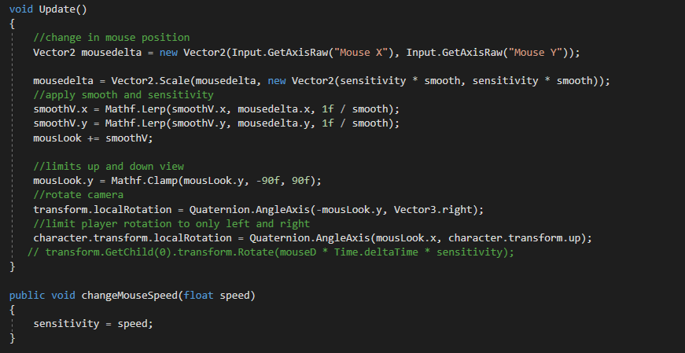
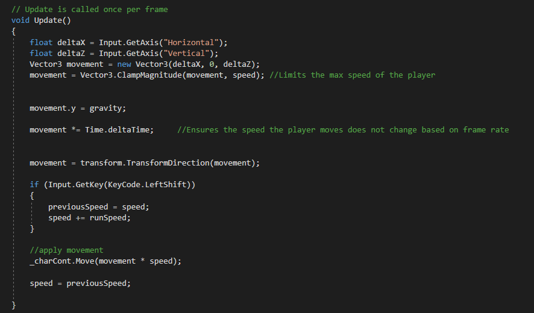
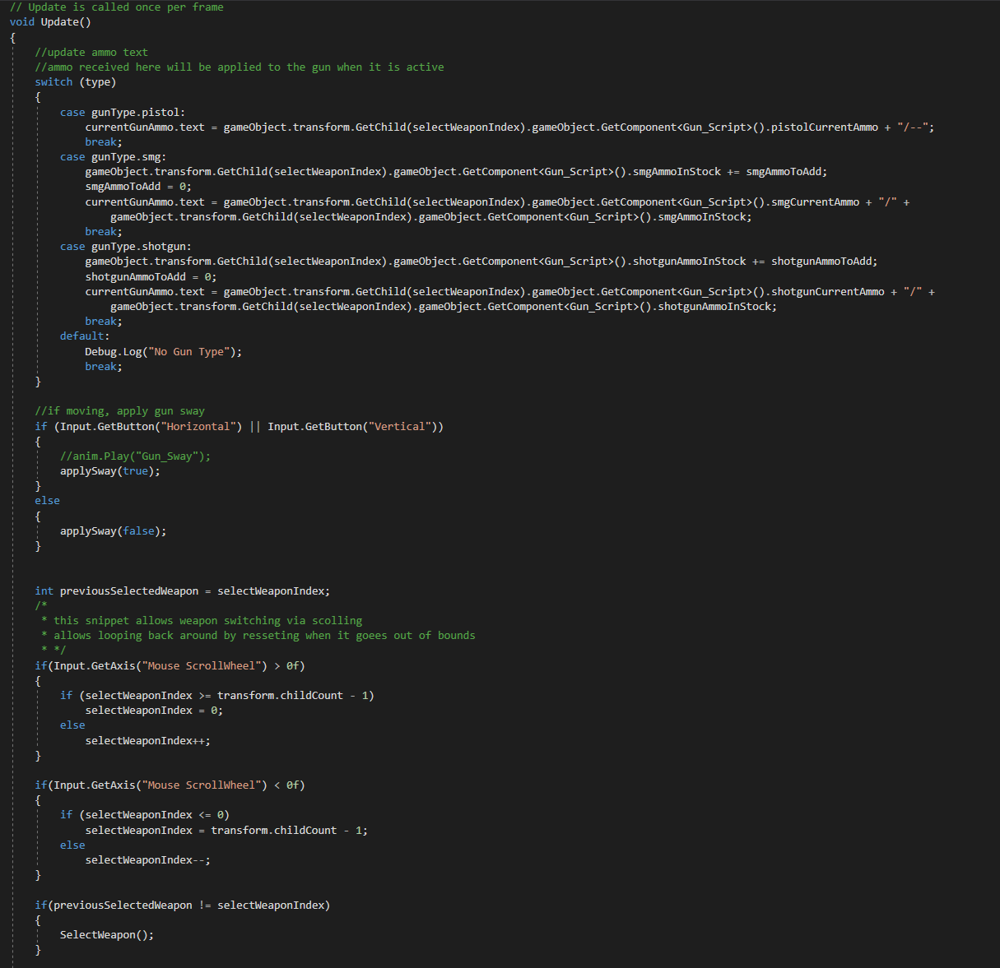
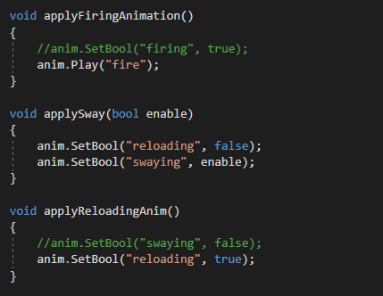
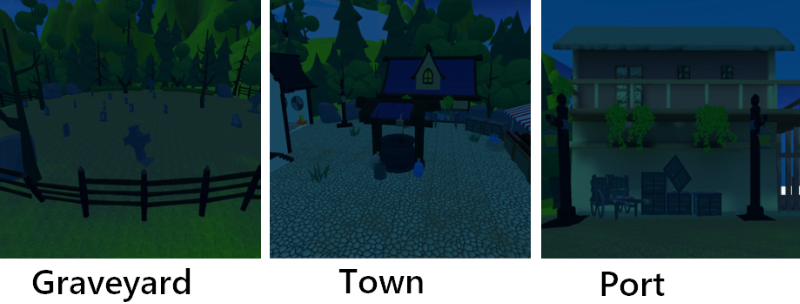
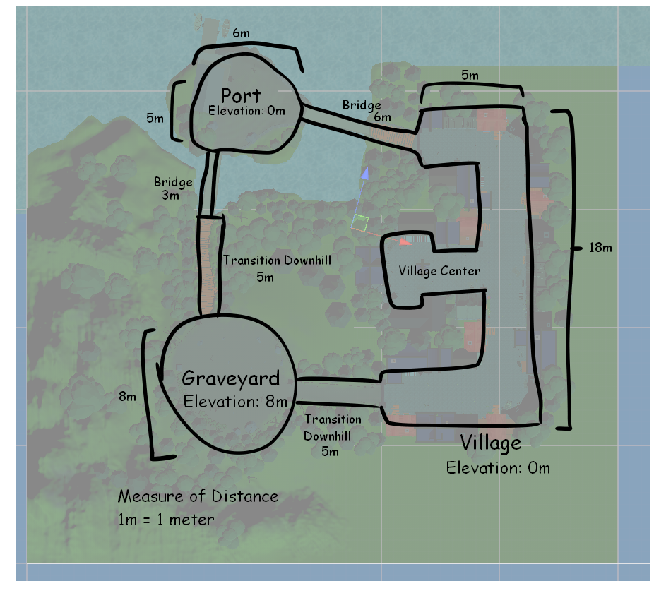
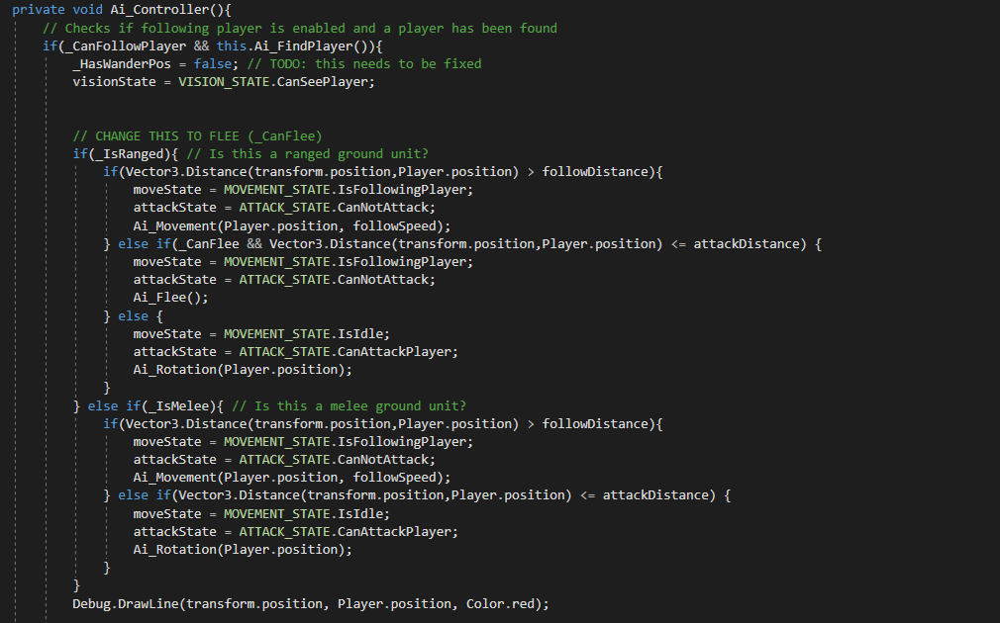
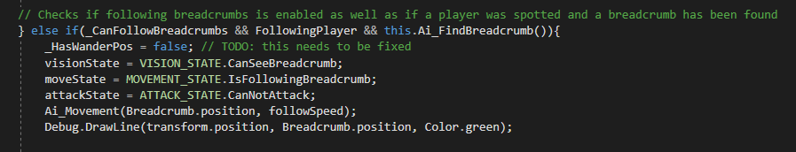

Duration: 2 Month |
Tools: Unity, Breadcrumb AI |
Team Size: Solo
Roles: Gameplay Programmer, AI Programmer, Level Designer, Environment Designer
Programming
Design
A Halloween themed first-person shooter. It is a wave based survival game, you have 3 weapons available to you. Ammo is scarce and the night terrors are relentless.
Fend off the night against evil candy out to get you. Explore the village and survive as long as you can, as waves get harder with each passing.
Developed in Unity, with assets from various sources. Enemy uses BreadCrumb AI for pathfinding. It was a solo project that I wanted to do for the spirit of Halloween.
Goal
I wanted to practice level design, constructing a cohesive environment. This project was also an endeavor to explore developing First Person Shooter controls and gameplay.
Development
Shoot o Treat was a passion project that combined my love for Halloween and first-person shooters.
My goal was to create a wave-based survival game with a spooky twist, where players fend off relentless waves of candy-themed enemies.
The development process was a mix of technical challenges and creative problem-solving, particularly in designing first-person controls, enemy AI, and level layout.
This project allowed me to practice level and environment design while refining my skills in Unity and C#.
Designing First-Person Mechanics
The foundation of this project is smooth and responsive controls, and this was where I started. Implementing first-person movement
and camera rotation seemed straightforward at first, but getting it to feel right was a challenge. I began by parenting the camera to the
player object, making it a child of a pivot point. This setup allowed me to programmatically rotate the camera based on mouse input, creating the
illusion of looking around. However, the initial implementation felt clunky—the camera rotation was either too slow or too fast, and the movement didn’t feel natural.

To fix this, I spent time tweaking the sensitivity values for mouse input and adjusting the camera’s rotation speed. I also experimented with
smoothing algorithms to eliminate jittery movements. For player movement, I used a force-based system, which introduced its own set of challenges.
Climbing slopes felt sluggish, while descending slopes made the player feel like they were floating. I adjusted gravity and friction values iteratively,
testing different configurations until the movement felt tight and responsive.

Going Into Shooting Gameplay
The shooting mechanics were built around a hitscan system. A raycast was fired from the center of the camera, and if it hit an enemy’s hitbox,
damage was applied. To add variety, I designed three weapon types:
Pistol: Unlimited ammo, low fire rate, and moderate damage. This was intended as a reliable fallback weapon.
Submachine Gun (SMG): Faster fire rate, lower damage, and limited ammo. This weapon was ideal for dealing with groups of enemies.
Shotgun: High damage, slow fire rate, and limited ammo with a short range. This weapon was perfect for close-quarters combat.
The Gun Controller Scripts manages the states of the gun in hand currently. It controls which gun is selected
through the mouse wheel, selecting based on the index of the gun that is under the player. It also applies the appropriate animations.

Balancing these weapons required extensive playtesting. I adjusted fire rates, ammo counts, and damage values to ensure each weapon felt distinct and
useful in different scenarios. One of the biggest challenges was ensuring the pistol felt viable without making the other weapons obsolete. I decided
to give the pistol unlimited ammo, which provided a safety net for players while still encouraging them to use the SMG and shotgun strategically.
One issue I encountered was with the gun sway animation. Initially, the sway animation would restart with every step, making it look unnatural.
I realized I was calling the “play sway animation” method continuously while the player was moving. To fix this, I introduced a `isMoving` boolean.
The animation would only start when the player pressed a movement key, loop while `isMoving` was true, and stop when the player stopped moving or started shooting.
This small change made the animation feel much more polished and immersive.

Designing the Level and Environment
With the core mechanics in place, I shifted my focus to level design. The game is set in a Halloween-themed
village divided into three main areas: the graveyard, the town, and the port. Each area was designed to offer a unique gameplay experience
while maintaining a cohesive aesthetic.
The **graveyard** is elevated, requiring players to climb uphill. This area is dense with obstacles like tombstones and trees,
creating a claustrophobic atmosphere. The **town** is set at ground level, with open spaces that allow players to maneuver freely.
This area is the most versatile, offering plenty of room for combat and exploration. The **port** is connected to the town by a bridge
and to the graveyard by a hill. It features uneven terrain and open spaces, making it a dynamic area for combat.

To maintain performance, I used low-poly models with flat colors, sourced from the Unity Asset Store and itch.io. I sketched the level layout beforehand,
ensuring each area had a distinct visual identity while maintaining a cohesive overall look. I placed invisible walls around the map to
prevent players from going out of bounds. Since the game lacked a jumping mechanic due to heavy gravity, these walls ensured players stayed within the playable area.

Designing Enemy AI
The enemies in Shoot o Treat are candy-themed, adding a playful twist to the Halloween theme. I wanted a simple AI system where enemies
would follow the player if within range. However, the dynamic terrain posed a challenge for pathfinding.
I discovered a free Unity plugin called **Breadcrumb AI**, which allowed enemies to follow a trail of invisible “breadcrumbs” left by the player.
This system was perfect for the game’s needs, as it provided a lightweight and efficient way to handle pathfinding. I adjusted the code so enemies
would only start following if the player was within a certain range. Outside this range, enemies would idle in place.


Playtesting was crucial to fine-tuning the detection range and ensuring enemies behaved as expected.
I also added a state system to handle transitions between idle and chase states, making the AI feel more dynamic.
For example, enemies would pause briefly before chasing the player, giving the player a moment to react.
This small detail added a layer of tension to the gameplay.
Building the Wave System
As a wave-based shooter, *Shoot o Treat* required a robust spawn system. The game features infinite waves,
with the number of enemies increasing after each wave. However, I ran into issues with enemy spawning. Enemies would
sometimes spawn below the ground or fly into the sky due to incorrect spawn point placement.
To address this, I added an invisible ceiling to prevent enemies from spawning too high, allowing gravity to pull
them down naturally. For enemies that spawned below the ground, I placed an invisible collision box at the bottom of the map.
If an enemy collided with this box, it would be destroyed, and the enemy counter would increment accordingly. This solution ensured that
the wave system remained functional, even if enemies spawned in unintended locations.
Playtesting and Iteration
Playtesting revealed several areas for improvement. For example, the spawn system needed adjustments to
ensure enemies appeared in logical locations. I also fine-tuned weapon balance and enemy behavior to create a
challenging but fair experience. One of the most rewarding aspects of development was seeing how players reacted to the game’s
difficulty curve. Early waves were designed to be manageable, allowing players to get comfortable with the mechanics. As the waves
progressed, the game became increasingly intense, pushing players to strategize and make the most of their limited resources.